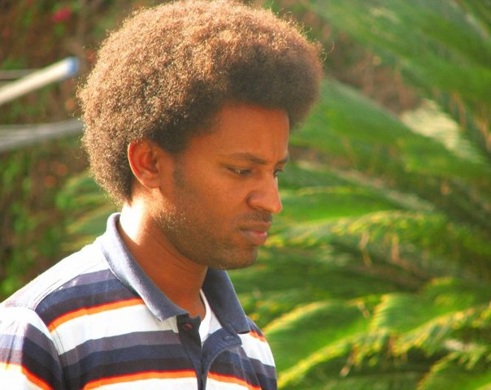

Baruch Zamir

About myself
A software developer with a great passion for the profession and a desire
to develop. knows how to handle multiple tasks and prioritize them. Always
giving of myself beyond what is required, dedicated and committed to work,
a man of giving and likes to work in a team. This part is better replaced
with a technical skill like full stack
Education and professional training
2020-2021 CodeIN web application programming and development course 2000
hours of training at the Career Technology Center Among the course
contents:
-
server side:C#, Asp.Net MVC, Node.js OOP, Ado.Net, API Using Express
-
Client side: HTML, CSS, JavaScript, React, Bootstrap, jQuery, Node.js
- development enviroment:Visual studio code, Visual studio
- Database: MONOGDB, MSSQL
-
: 1998-2002 High School Moboot Iron, majoring in Geography, complete
matriculation
Work Experience:
-
2017 Klalit Health Insurance Logistics Center - Security Services
Officer
- 2016-2017 Warehouseman in Mashbir for the consumer
-
2011-2016 - Armored blocker production and development of entrance doors
and security - responsible for night shift
Military Service:
-
2005-2002 fighter in the artillery corps, discharged with the rank of
first sergeant
-
2006 - Reserve service - Signal of the Second Lebanon War - Preparation
of ammunition for shooting
Computer and language skills
- Full control of all OFFICE software
- Hebrew: mother tongue English: good, Amharic: mother tongue